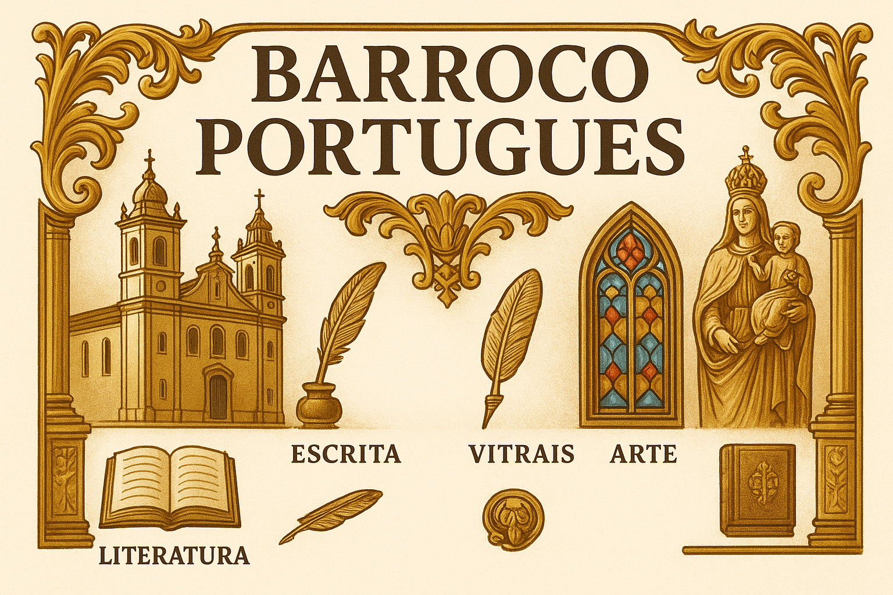

Barroco Português
O Barroco Português foi um dos mais expressivos movimentos artísticos e culturais de Portugal, desenvolvendo-se entre o final do século XVI e o século XVIII. Em um contexto marcado pela Contrarreforma, pela crise política e pelo declínio econômico após o auge das Grandes Navegações, o Barroco buscou traduzir, nas artes e na literatura, as tensões entre fé e razão, espiritualidade e materialidade, vida e morte.
Contexto Histórico
O movimento nasceu da necessidade de reafirmação da fé católica frente ao avanço do protestantismo. A Igreja utilizou a arte como instrumento de devoção, valorizando o impacto visual e emocional. Ao mesmo tempo, a monarquia portuguesa explorava o estilo como símbolo de poder, imponência e tradição.
Características do Barroco Português
- Dramaticidade: contraste entre luz e sombra, céu e inferno, razão e emoção.
- Estética ornamentada: uso de formas rebuscadas, talha dourada e riqueza decorativa.
- Religiosidade: forte ligação com temas sagrados, exaltando a fé católica.
- Dualidade: presença de conflitos existenciais, como o desejo terreno em oposição à salvação espiritual.
- Linguagem elaborada: na literatura, predomínio de metáforas, antíteses e hipérboles.
Principais Autores
No campo literário, destacam-se dois grandes nomes:
- Padre António Vieira: célebre orador sacro, autor de sermões que uniam fé, política e crítica social.
- Gregório de Matos: embora brasileiro, é parte do universo barroco lusófono, conhecido por sua poesia satírica e religiosa.
Arquitetura e Artes
O Barroco Português deixou marcas profundas na arquitetura, escultura e pintura. As igrejas desse período, ricamente ornamentadas, utilizavam a talha dourada como símbolo de luxo e devoção. Exemplos notáveis podem ser vistos na Igreja de São Roque, em Lisboa, e nos mosteiros barrocos espalhados pelo território português.
Legado
O Barroco Português não apenas consolidou um estilo artístico próprio em Portugal, mas também influenciou diretamente a produção cultural no Brasil colonial, onde alcançou expressão singular nas obras de Aleijadinho e Mestre Ataíde. Assim, o movimento continua sendo um marco da identidade cultural luso-brasileira.